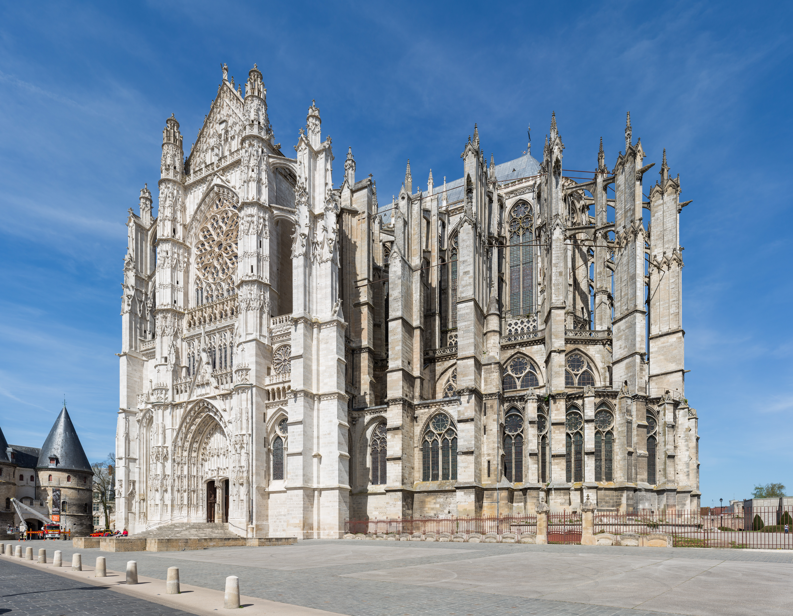
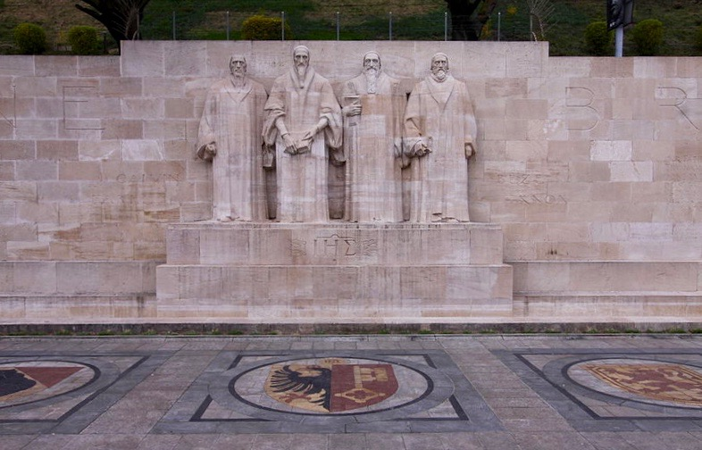
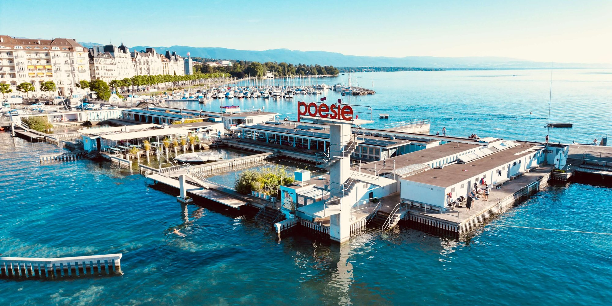
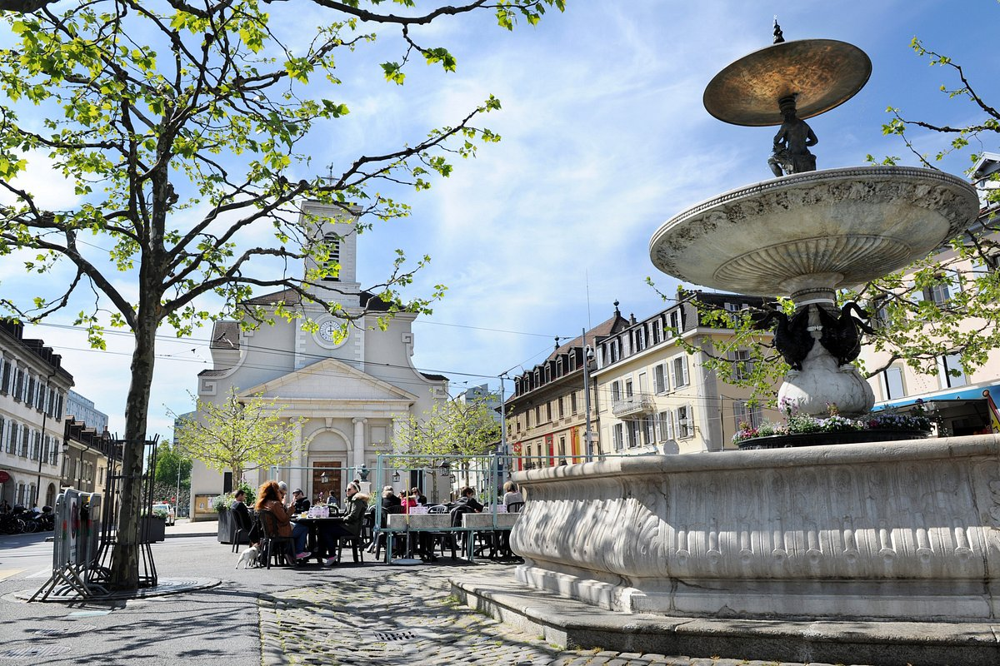

Genebra
Por Lourdes Mello
Por Lourdes Mello
Genebra é a segunda maior cidade da Suíça (atrás apenas de Zurique) e a capital do cantão homônimo. Localizada na parte francófona do país, às margens do Lago Léman (ou Lago de Genebra) e cercada pelos Alpes e montanhas do Jura, é mundialmente reconhecida como um dos principais centros globais de diplomacia, finanças e cooperação internacional.
Principais Atrações:

Jet d'Eau:
Uma imponente fonte de água no meio do Lago Léman que lança jatos a até 140 metros de altura.

Relógio de Flores (L'horloge fleurie):
Localizado no Jardim Inglês (Jardin Anglais), feito com mais de 6.500 plantas vivas em homenagem à indústria relojoeira.

Catedral de São Pedro (Cathédrale Saint-Pierre):
Igreja histórica no centro antigo (Cidade Velha) que oferece uma vista panorâmica da cidade no alto de suas torres.

Muro dos Reformadores:
Monumento de 100 metros de comprimento no Parc des Bastions que celebra os líderes da Reforma Protestante.

Bains des Pâquis:
Área de lazer popular à beira do lago para banhos, saunas e fondue.

Carouge:
Bairro de estilo arquitetônico piemontês, conhecido pelo clima boêmio, lojinhas artesanais e feiras de rua.